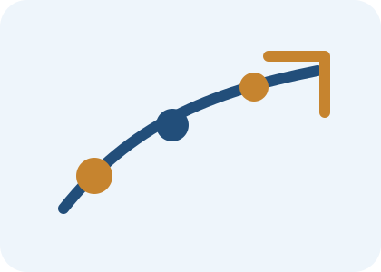

AI کا مستقبل
تعلیم، کاروبار، صحت، روزگار اور معاشرے میں آنے والی تبدیلیاں
AI مستقبل میں کام، تعلیم، کاروبار، صحت، creativity اور روزمرہ زندگی کو مزید بدل سکتی ہے۔ فائدہ اٹھانے کے لیے سیکھنا اور محتاط رہنا دونوں ضروری ہیں۔

مستقبل میں AI کا کردار
AI آنے والے وقت میں مزید عام ہو جائے گی۔ یہ موبائل، apps، offices، schools، hospitals، customer service، marketing، design اور research میں زیادہ نظر آئے گی۔
بہت سے کام مکمل طور پر ختم نہیں ہوں گے بلکہ بدل جائیں گے۔
جو لوگ AI کو سمجھ کر استعمال کرنا سیکھیں گے، وہ زیادہ بہتر طریقے سے کام کر سکیں گے۔
کام اور روزگار
AI repetitive کاموں کو تیز کر سکتی ہے، جیسے reports، summaries، data entry، email drafts، customer replies اور basic analysis۔
اس سے کچھ roles بدلیں گے اور نئی skills کی ضرورت بڑھے گی۔
انسانی skills جیسے judgment، strategy، creativity، relationship building اور leadership زیادہ اہم رہیں گی۔
تعلیم میں تبدیلی
طلبہ AI سے مشکل topics آسان زبان میں سمجھ سکتے ہیں، quizzes بنا سکتے ہیں، revision plans لے سکتے ہیں اور language practice کر سکتے ہیں۔
اساتذہ lesson planning، worksheets، activity ideas اور assessment support لے سکتے ہیں۔
لیکن plagiarism، overdependence اور غلط معلومات سے بچنے کے لیے clear rules ضروری ہیں۔
صحت اور عوامی خدمات
AI appointment systems، health monitoring، medical image support، patient communication اور research میں مدد دے سکتی ہے۔
مگر medical فیصلوں میں doctors اور experts کا کردار لازمی رہے گا۔
AI کو support tool سمجھنا چاہیے، doctor کا بدل نہیں۔
تیاری کیسے کریں؟
AI tools کو practical کاموں میں test کریں۔ اچھے سوال لکھنا سیکھیں۔ privacy rules سمجھیں۔ نتائج verify کریں۔
اپنی field میں دیکھیں کہ AI کون سے کام آسان کر سکتی ہے اور کن کاموں میں انسانی expertise ضروری ہے۔
مسلسل learning مستقبل کی بہترین تیاری ہے۔
اہم نکات
- AI مستقبل میں مزید عام ہو گی۔
- کئی کام ختم نہیں بلکہ تبدیل ہوں گے۔
- انسانی judgment اور creativity اہم رہیں گے۔
- AI skills سیکھنا future readiness کا حصہ ہے۔
Quick Quiz
نیچے دیے گئے سوالات کے جواب دے کر اپنی سمجھ چیک کریں۔